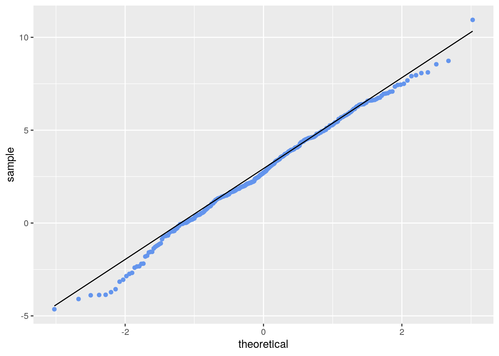
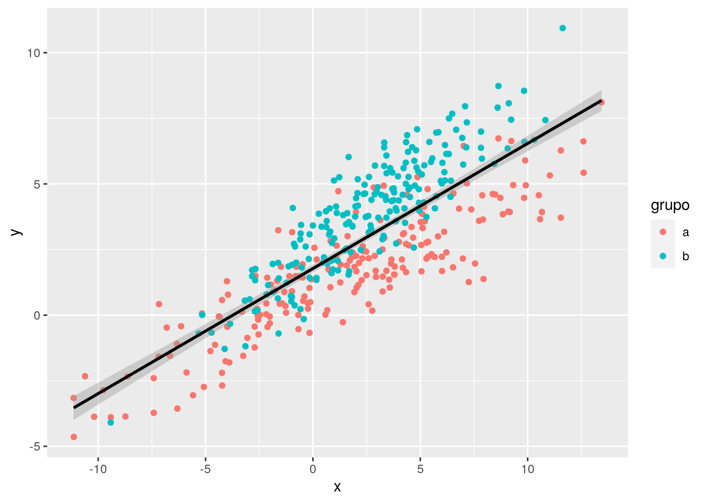

Intro to Stats
Aaron Weimann
27/03/2020
######################################################################################
## Guion para explicar los comandos básicos de representación y exploración de datos
## a traves de la librería ggplot2
#####################################################################################
# Importar lib
library(ggplot2)
#library(ggpubr)
library(data.table)
# Establecer una plantilla gráfica
#theme_set(ggpubr::theme_pubclean(base_size = 15)) # Load theme
# Cuarteto de Anscombe, gráfica para mostar
anscombe ## x1 x2 x3 x4 y1 y2 y3 y4
## 1 10 10 10 8 8.04 9.14 7.46 6.58
## 2 8 8 8 8 6.95 8.14 6.77 5.76
## 3 13 13 13 8 7.58 8.74 12.74 7.71
## 4 9 9 9 8 8.81 8.77 7.11 8.84
## 5 11 11 11 8 8.33 9.26 7.81 8.47
## 6 14 14 14 8 9.96 8.10 8.84 7.04
## 7 6 6 6 8 7.24 6.13 6.08 5.25
## 8 4 4 4 19 4.26 3.10 5.39 12.50
## 9 12 12 12 8 10.84 9.13 8.15 5.56
## 10 7 7 7 8 4.82 7.26 6.42 7.91
## 11 5 5 5 8 5.68 4.74 5.73 6.89anscombe_m <- data.frame() # Crear data.frame vacio para recoger
for(i in 1:4) { # Transformar cuarteto de anscombe de formato ancho a formato largo
anscombe_m <- rbind(anscombe_m, data.frame(set = i, x = anscombe[,i], y = anscombe[,i+4]))
}
rm(i)
anscombe_m## set x y
## 1 1 10 8.04
## 2 1 8 6.95
## 3 1 13 7.58
## 4 1 9 8.81
## 5 1 11 8.33
## 6 1 14 9.96
## 7 1 6 7.24
## 8 1 4 4.26
## 9 1 12 10.84
## 10 1 7 4.82
## 11 1 5 5.68
## 12 2 10 9.14
## 13 2 8 8.14
## 14 2 13 8.74
## 15 2 9 8.77
## 16 2 11 9.26
## 17 2 14 8.10
## 18 2 6 6.13
## 19 2 4 3.10
## 20 2 12 9.13
## 21 2 7 7.26
## 22 2 5 4.74
## 23 3 10 7.46
## 24 3 8 6.77
## 25 3 13 12.74
## 26 3 9 7.11
## 27 3 11 7.81
## 28 3 14 8.84
## 29 3 6 6.08
## 30 3 4 5.39
## 31 3 12 8.15
## 32 3 7 6.42
## 33 3 5 5.73
## 34 4 8 6.58
## 35 4 8 5.76
## 36 4 8 7.71
## 37 4 8 8.84
## 38 4 8 8.47
## 39 4 8 7.04
## 40 4 8 5.25
## 41 4 19 12.50
## 42 4 8 5.56
## 43 4 8 7.91
## 44 4 8 6.89ggplot(anscombe_m, aes(x, y)) +
geom_point(size=2, color="red", fill="orange", shape=21) +
geom_smooth(method="lm", fill=NA, fullrange=TRUE) +
facet_wrap(~paste0("Set ", set), ncol=2)## `geom_smooth()` using formula 'y ~ x'# Como construir una gráfica --------------------------------------
# Crear una tabla de datos para trabajar
Sigma <- matrix(c(10,4,3,2),2,2) # Matriz de correlaciones para la función mvrnorm
Sigma## [,1] [,2]
## [1,] 10 3
## [2,] 4 2d <- data.table(lugar = sample(c("España", "Mexico"), 400, replace = TRUE)) # variable1 = 2 paises
d[, grupo := rep(c("a", "b"), each = 200)] # variable2 = 2 grupos
# variable2 y 3: multivariate dist
set.seed(1) # Plantar semilla aleatoria
d[grupo == "a",
c("x", "y") :=
data.table(MASS::mvrnorm(n = 200, rep(1, 2), Sigma) *1.75)]
d[grupo == "b",
c("x", "y") :=
data.table(MASS::mvrnorm(n = 200, rep(1, 2), Sigma) + 1.5)]
d[grupo == "b", y := y * 1.5 ]
d # Mostrar el resultado## lugar grupo x y
## 1: Mexico a 5.3686727 2.7946357
## 2: España a 1.3988202 -0.2694181
## 3: Mexico a 6.9851398 2.1580054
## 4: Mexico a -7.1858662 -1.5841854
## 5: España a -0.9653991 3.1609163
## ---
## 396: Mexico b -0.1541564 3.0799483
## 397: Mexico b 5.0719842 5.3584173
## 398: Mexico b 3.6010145 5.5991424
## 399: Mexico b -0.9357033 4.0844269
## 400: Mexico b 5.1691029 4.2964435# Sección 1: Gráficas univariantes ------------------------------------------------
# Histograma
ggplot(d, aes(x = y)) +
geom_histogram(fill = "cornflowerblue", col = "gray80") # Argumento bins por defecto## `stat_bin()` using `bins = 30`. Pick better value with `binwidth`.ggplot(d, aes(x = y)) +
geom_histogram(fill = "cornflowerblue", col = "gray80",
bins = 64) # Argumento bins declarado# Gráfico de cuantiles
ggplot(d, aes(sample = y)) +
geom_qq(col = "cornflowerblue") +
geom_qq_line(distribution = qnorm)
# Sección 2: Gráficas bivariantes categóricas --------------------------------------
# Diagrama de barras
ggplot(d, aes(x = grupo, y = y)) +
geom_bar(stat = "identity", fill = "cornflowerblue") # Diagrama de cajas y bigotes
ggplot(d, aes(x = grupo, y = y)) +
geom_boxplot(fill = "cornflowerblue") # Sección 4: Gráficos bivaiantes continuos -----------------------------------------
ggplot(d, aes(x = x, y = y, shape = grupo)) +
geom_point(col = "black", # color fijo
size = 2) +
theme_bw(base_size = 20)ggplot(d, aes(x = x, y = y, col = grupo)) + # color como variable
geom_point(size = 2) +
theme_bw(base_size = 20)# Sección 5: Representación de modelos simples ---------------------------------------
ggplot(d, aes(x = x, y = y)) +
geom_point() +
stat_smooth() ## `geom_smooth()` using method = 'loess' and formula 'y ~ x'ggplot(d, aes(x = x, y = y)) +
geom_point(aes(col = grupo)) +
stat_smooth(method = "lm", col = "black")## `geom_smooth()` using formula 'y ~ x'
# Sección 6: Representación de modelos con subsetado y distitos datos -------------------
ggplot(d, # Datos originales
aes(x = x, y = y, col = grupo)) +
geom_point() + # Representar como puntos
stat_smooth(method = "lm", # Regresión lineal
formula = y ~ exp(x)) + # Especificar fórmula
# Introducir seguntods datos,
geom_line(data = d[, .(meanY = mean(y)),
by = .(x = round(x), grupo, lugar)],
aes(x = x, y = meanY), # Representar como lineas discontinueas
linetype = 2, size = 1.5) +
facet_grid(~ lugar, # Separar datos por lugar
scales = "free_x") +
scale_x_continuous(trans = "log2") +
labs(x = "Una variable", y = "Una respuesta") +
scale_color_brewer(palette = "Set1")## Warning in self$trans$transform(x): NaNs produced## Warning: Transformation introduced infinite values in continuous x-axis## Warning in self$trans$transform(x): NaNs produced## Warning: Transformation introduced infinite values in continuous x-axis## Warning in self$trans$transform(x): NaNs produced## Warning: Transformation introduced infinite values in continuous x-axis## Warning: Removed 122 rows containing non-finite values (stat_smooth).## Warning: Removed 122 rows containing missing values (geom_point).## Warning: Removed 16 row(s) containing missing values (geom_path).